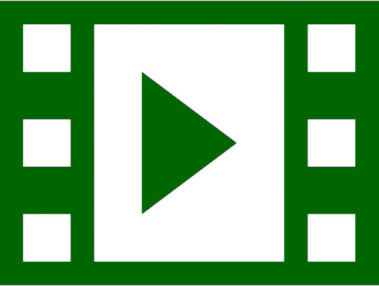

Non è possibile il pernottamento
Locale invernale Chiuso
Solo pranzo da asporto
(si consiglia la prenotazione)
- WebCam al Rifugio
- Come prenotare
- I lavori al rifugio
- La Storia del Rifugio
- Quando il rifugio è chiuso
|
|
|||
| |
 Guarda il video | Seguici su FB | |
|
IL RIFUGIO APRIRÀ IL 27/6 Non è possibile il pernottamento Locale invernale Chiuso Solo pranzo da asporto (si consiglia la prenotazione) |
- Come arrivare al rifugio - WebCam al Rifugio - Come prenotare - I lavori al rifugio - La Storia del Rifugio - Quando il rifugio è chiuso |
||
| Posizione del rifugio | Caratteristiche del Rifugio |
||
| Altitudine | 2580ms/lm | Costruito nel | 1937 |
| Massiccio | Disgrazia Vazzeda | Proprietà | CAI SOVICO |
| Località | Bocchetta Piattè di Vazzeda | Posti letto | 10 Ospiti+2 Brande |
| Comune | Chiesa Valmalenco (SO) - Chiareggio | Locale Invernale | Terminato nel 2013 4 posti letto |
| Coordinate | Lat. 46°18' 30.95"N Long. 9°44' 31.34"E | Telefono | 0342 / 556010 |